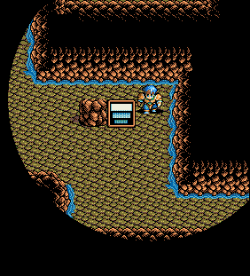
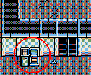
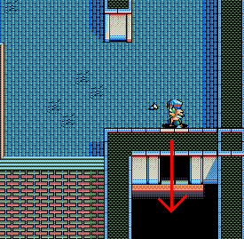
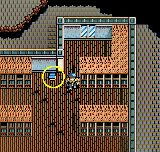

| 概要 | 情報 | アイテム一覧 |
| 敵キャラ一覧 | 攻略チャート | 地図 |
| ダウンロード | 英雄伝説 攻略へ |
|
第五章 エメの村の奴隷商人に話しかける ルドラへ行き、船に乗る リシェールに到着 リシェールの北にあるナスールの町へ移動 町にいる奴隷商人に話しかける ナスールの町の北にあるラフォーヌの村へ移動 村にいる老婆と、犬がいる家の老人に話しかける 村にいる村長と冒険家にも話しかける ラフォーヌの村のだいたい東にあるファンガスへ移動 (イベント) 狼の口で宝探し すぐに降参してもいいですが、アイテムを回収しましょう。 洞窟にある大きな岩は動かせます。  また、洞窟内の扉の開閉状況により、床スイッチの動作が変化し ます。「この床走るべからず」の所は、歩いて止まってを繰り返し ましょう。奥にある「銀の笛」を入手したら、入り口にいる部下に 話しかければ終了です。 ちなみに、「黄金の剣」は「ワプの羽」を使って洞窟を脱出すれ ば入手できます。 (イベント) コルクスの村へ行き、「ハンス」に話しかける ベッドのある家の、不眠症に親子に話しかける ラフォーヌのバザーをやっている部下に話しかけ、「眠り草」をもらう コルクスの村へ行き、不眠症の親子に「眠り草」を渡す コルクスの村の北にある水晶の塔へ行く ラフォーヌへ戻り、「ゲイル1世」と話す コルクスの村へ行き、「ガリュウバス」と戦闘 水晶の塔へ行き、「ガリュウバス」と戦闘 (イベント、「黄金のカード」を入手) ラフォーヌの村へ行き、冒険家に話しかける (イベント) 狼の口へ行き、「銀の笛」を入手 水晶の塔へ移動し、ディーナ姫を救出 下の画像の装置にカードを差し込むと、扉が開きます。ディーナ姫の いる部屋へ移動するには、上の階から、下へ落ちることで移動できます。   「ガリュウバス」と戦闘 (イベント) 水晶の塔の最上階で「銀の笛」を使う 「バジール」と戦う バジール本体にシレントを使うと、幻体が消えますので、その後は直接攻撃 で戦えます。幻体を消さずに戦う場合は、魔法の連発となりますので、かなり 厳しい戦いになるはずです。 (イベント) |
|
リシェールへ行き、船に乗る フィーンの砦に着く (イベント) カウルの村へ行き、ドラゴンの飼い主に話しかける 「竜の笛」を入手 フィーンの砦に戻る ワイロを渡し、外へ どうしても払いたくなければ、「情報」を参照 フィーンの砦からだいたい東にあるギルモアの里へ移動 奥の建物にいる「ドルカス」、「ゴードン」に話しかける フィーンの砦に戻る (イベント) ギルモアの里へ行き、ドランに話しかける ギルモアの里の西にある廃坑へ移動 廃坑の奥で、ドランの仲間の鉱夫に話しかける ギルモアの里へ戻り、ドルカスのいる部屋に行く 「ジャングリの地図」を入手 ゴードンのいる部屋へ行き、ゴードンに地図を渡す 廃坑の奥へ行く (イベント) 廃墟の中で、「古代の武器の本」を入手  ファンガスへ移動し、冒険家に本を見せる ギルモアの里へ行き、神父に話しかける ゴードンに話しかけて、了解を得る 神父に話しかけ、「燭台」を入手 「光の剣」を入手 「竜の笛」を使い、ニルギドへ移動 ギーラの道、バゼルの塔、バーニス城と移動 バーニス城の奥にいる「アグニージャ(影)」と戦う サイレス1を使う必要はありません。ダイヤの装備品や、引火性の装備品 はボスのブレスで消し炭になってしまいます。「エリクサー」、「ラム酒」 、「レスの根」などをできるだけもって勝負を挑みましょう。 「光の剣」で溶ける扉を探し、奥へ移動 「アグニージャ」と戦う オビス4を使ってくるので、サイレス1を使わないと勝てません。サイレス1 を使った後は、「光の剣」を装備しているキャラが攻撃をし、それ以外は防御 させましょう。そして、防御しているキャラが必要に応じて回復を行ってくだ さい。魔法が使えないので、回復アイテムは大量に持っていきましょう。 また、ブレスの威力は相変わらずなので引火性の装備品に注意してください。 (イベント) エンディング |
| 概要 | 情報 | アイテム一覧 |
| 敵キャラ一覧 | 攻略チャート | 地図 |
| ダウンロード | 英雄伝説 攻略へ |